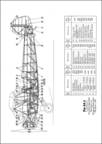
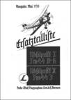
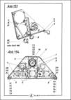
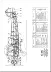
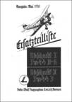
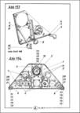

Focke-Wulf Flugzeugbau
Focke-Wulf Fw 44
49,00 €
 





Dateigröße: 205 MB
Kompendium, gesamt 1.220 Seiten, bestehend aus:
Fw 44 J, Flugzeug-Handbuch, LDv 371, 1936
Fw 44 J, Flugzeug-Beschreibung, LDv 372, 1936
Focke Wulf Fw 44 D-G und J, Ersatzteilliste, 1938
Fw 44 Bau-Beschreibung, 1937
Siemens Sh 14 A4, Handbuch u. Ersatzteilliste, 1936
Bestell-Nr.: LAH-1010-1
Focke-Wulf Fw 56
39,00 €
Dateigröße: 232 MB
Kompendium, gesamt 718 Seiten, bestehend aus:
Flugzeug-Handbuch, LDv 374, 1936
Flugzeug-Beschreibung, LDv 375, 1936
Truppen-Ersatzteilliste, 1939
Div. Werks-Baubeschreibungen
Werksprospekt mit technischen Beschreibungen
Argus As 10 C. Luftfahrt-Lehrbücherei, Band 20, 1940
Bestell-Nr.: LAH-425
Focke-Wulf Fw 58
49,00 €
Dateigröße: 153 MB
Kompendium, gesamt 1.768 Seiten, bestehend aus:
Fw 58 B und C, Flugzeug-Handbuch, LDv 562, 1937
Fw 58 B und C, Flugzeug-Beschreibung, LDv 563, 1937
Fw 58 Werks-Baubeschreibungen, ca. 1938
Fw 58 B und C, Kurzbetriebsanleitung, 1938
Fw 58 B und C, Ersatzteilliste, 1941
Argus As 10 C, Motoren-Handbuch und Ersatzteilliste, 1939 – 1942
Bestell-Nr.: LAH-1011-1
Focke-Wulf Fw 189
49,00 €
Dateigröße: 760 MB
Kompendium, gesamt 1.610 Seiten, bestehend aus:
Fw 189 A-1, Flugzeug-Handbuch. D(Luft)T 2189, 1941
Fw 189 A, Ersatzteilliste, 1942 - 1943
Fw 189 A-1 bis A-3, Bed.-Vorschrift-Fl. LDvT 2189 A-1, A-2, A-3/Fl, 1943
Fw 189 A-0, Kurz-Betriebsanleitung KBA/Fl mit As 410, 1940
Fw 189 A, Abwurfwaffe, D(Luft)T2651/5, 1940
Fw 189 A-1, Pläne, Betriebsgeräte und Leitungen, Elt-Anlage,
Fw 189 V-5, Rüst- und Betriebsanweisung,
Bestell-Nr.: LAH-1056-1
Focke-Wulf Fw 190 A
49,00 €
Dateigröße: 565 MB
Kompendium, gesamt 4.590 Seiten, bestehend aus:
Fw 190 A-1, Flugzeug-Handbuch, D(Luft)T 2190, 1943
Fw 190 A-1 bis A-8, Bedienungsvorschrift/Fl, LDvT 2190 A-1 bis A-8/Fl. 1944
Fw 190 A-1, Schusswaffenanlage, LDvT 2190 A-1/Wa, 1941,
Fw 190 A-2 bis A-4, Flugzeug-Handbuch, D(Luft)T 2190 A-2 bis A-4, 1942 – 1944
Fw 190 A-2, Schußwaffenanlage, LDvT 2190 A-2/Wa, 1941
Fw 190 A-5 und A-6, Flugzeug-Handbuch, D(Luft)T 2190 A-5 und A-6, 1943 – 1944
Fw 190 A-7 bis A-9, Flugzeug-Handbuch, D(Luft)T 2190 A-7 bis A-9, 1943 – 1944
Fw 190 A-7 und A-8 Schußwaffenanlage, LDvT 2190 A-7 und A-8/Wa, 1944
Fw 190 A-7 und A-8/R2 Waffen-Rüstsatz 2: MK 108, LDvT 2190A-7 u. A-8/Wa, 1944
Fw 190 A, Ersatzteilliste, 1944
Fw 190, Reparaturanweisung, D(Luft)T 2190/Rep, 1944
Bestell-Nr.: LAH-1003-1
Focke-Wulf Fw 190 D
39,00 €
Dateigröße: 545 MB
Kompendium, gesamt 1.736 Seiten, bestehend aus:
Fw 190 D-9 Flugzeug-Handbuch, D(Luft)T2190 D-9. 1944
Fw 190 D-9, Ersatzteilliste, 1944
Fw 190 D-9 Einweisungsunterlagen, 1945
Fw 190 Reparaturanweisung D(Luft)T 2190, 1944
Fw 190 A-5, A-6, Flugzeug-Handbuch, Beförderung und Bruchbergung, 1943
JUMO 213 A-1, C-0 Motoren-Handbuch, 1943
MG 151 Waffen-Handbuch, D(Luft)T6151, 1942
MG 131 Waffen-Handbuch D(Luft)T6131, 1941
Bestell-Nr.: LAH-419
Focke-Wulf Ta 152
39,00 €
Dateigröße: 127 MB
Kompendium, gesamt 795 Seiten, bestehend aus:
Ta 152 H-0 und H-1, Flugzeug-Handbuch, 1944 / 1945
Ta 152 H-0 und H-1, Einweisungsunterlagen, 1945
Ta 152 H-0 und H-1, Bedienungsvorschrift-Fl, LDvT 2152H-0/Fl, 1945
Fw 190, Reparaturanweisung, D(Luft)T 2190, 1944
Fw 190 A-5, A-6, Flugzeug-Handbuch, Beförderung u. Bruchbergung, 1943
MG 151 Waffen-Handbuch, D(Luft)T 6151, 1942
MK 108, Waffen-Handbuch, D(Luft)T 6108, 1943
Bestell-Nr.: LAH-418
Focke-Wulf Ta 154
39,00 €
Dateigröße: 505 MB
Kompendium, gesamt 1.688 Seiten, bestehend aus:
Ta 154 Flugzeug-Handbuch, 1943
Ta 154 Bedienungsvorschrift, 1943
Ta 154, Ersatzteilliste (Baugruppe 9-Ausrüstung fehlt), 1943
MG 151 Waffen-Handbuch, D(Luft)T6151, 1942,
MK 108, Waffen-Handbuch, D(Luft)T6108, 1943
Junkers JUMO 211 F und J Motoren-Handbuch, 1941
Junkers VS 11, Verstell-Luftschrauben-Anlage, 1941
Funkgeräte-Handbücher, 1940 -1942
Bestell-Nr.: LAH-427
Focke-Wulf Fw 200
39,00 €
Dateigröße: 948 MB
Kompendium, gesamt 2.250 Seiten, bestehend aus:
Fw 200 A „Condor“, Werksprospekt mit Flugzeug-Beschreibung, 1938
Fw 200 C-1 und C-2, D(Luft)T 2661/1, Flugzeug-Handbuch, 1940
Fw 200 C-3, Kennblatt für Flugzeugmuster mit BRAMO 323 R-2-Motoren, 1941
Fw 200 C-3, LDvT 2200/Fl, Bedienungsvorschrift/Fl, 1941
Fw 200 C-4, Flugzeug-Handbuch, D(Luft)T 2200 C-4, Teil 9B Schaltunterlagen, 1942
Fw 200 C, Ersatzteilliste, (Baugruppe 1-Rumpfwerk fehlt), 1943
Fw 200 C, Schußwaffe, D(Luft)T 2661/4, 1940
Fw 200 C, Abwurfwaffe, D(Luft)T 2661/5. 1940
MG 15, Waffen-Handbuch, LDv 110, 1939,
MG-FF, Ausführung B, Waffen-Handbuch, LDv 113/2, 1939
BMW 132 H/1, Flugmotor, 1940
BRAMO FAFNIR 323 R, Flugmotor, 1941
Bestell-Nr.: LAH-439
Focke-Wulf, Allgemeine Reparatur-Anleitung
19,00 €
Dateigröße: 25 MB
für Fw-Gemischtbau-Flugzeuge, LDv 373, 1937, 208 Seiten.
Bestell-Nr.: LAH-424